🕌 MASJID NURUL UKHUWAH
Jl. Kutilang Barat — Donan, Cilacap Tengah, Jawa Tengah
Jl. Kutilang Barat — Donan, Cilacap Tengah, Jawa Tengah
Belum ada agenda khusus yang akan datang.
Silakan lihat kegiatan rutin Masjid Nurul Ukhuwah di bawah ini. 🤲
* Waktu diperbarui berkala — dapat berubah setiap hari
MASJID NURUL UKHUWAH
Nomor ID: 01.6.14.01.22.000105
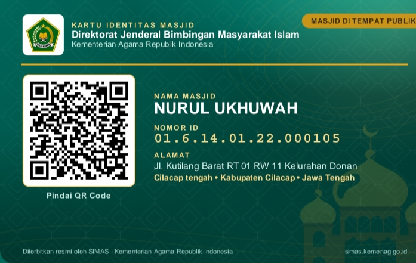
Terdaftar resmi di SIMAS — Kementerian Agama Republik Indonesia
Ustadz — Fikih & Tahsinul Qur'an (Malam Kamis)
Ustadzah — Iqro' & Al-Qur'an Ibu-ibu (Selasa & Jumat)
Ustadz/Ustadzah — Pengajian Umum Bulanan
Semoga Allah membalas keikhlasan mereka dengan sebaik-baik balasan. 🤲
Senantiasa menjaga dan memelihara rumah Allah — dari perbaikan atap, fasilitas, hingga perawatan alat ibadah.
.jpg)
Berikut kegiatan rutin yang senantiasa kami laksanakan — semoga bermanfaat dan mengundang keberkahan. 🤲
Ba'da Maghrib — sebelum Isya
Mengaji, berzikir, dan memperdalam ilmu agama bersama jamaah.
Ba'da Subuh — sampai Syuruk
Menetap di masjid, berzikir, dan menunggu waktu Syuruk — momen penuh pahala.
Setiap Selasa & Jumat · 16.00–17.30 WIB
Bersama Ustadzah. Alhamdulillah tumbuh dari 3 orang menjadi 13 orang dalam 4 bulan! Semoga terus bertambah. 🤲
Setiap Malam Kamis · Ba'da Maghrib
Belajar membaca Al-Qur'an dengan tajwid yang benar dan ilmu Fikih bersama Ustadz.
Setiap Ahad Minggu Ketiga · Ba'da Ashar
Terbuka untuk seluruh jamaah, warga RW XI dan sekitar. Bersama Ustadz/Ustadzah.
Setiap Ahad · 09.00–10.00 WIB
Bersama-sama membaca Al-Qur'an dengan target penyelesaian bersama.
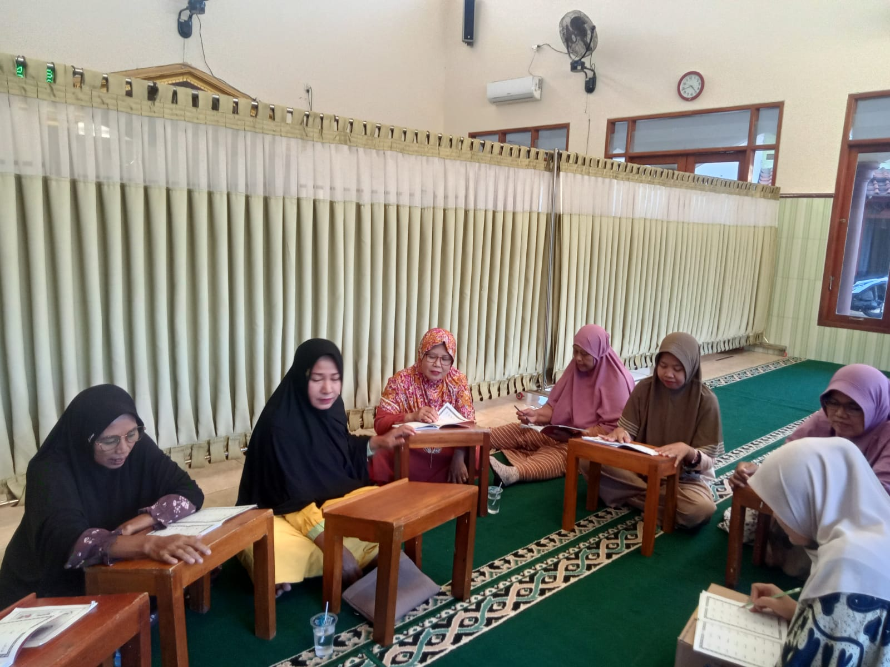
Setiap Hari Jumat
Sholat berjamaah dengan Imam dan Khatib — keutamaan hari Jumat di masjid.
Setiap Ahad Pagi — Ba'da Sholat Subuh · Jarak 30–50 km
Bukan sekadar olahraga. Ini dakwah dengan sepeda — menjaga kesehatan, mempererat silaturahmi, mengenalkan masjid kepada masyarakat luas, dan mengajak teman-teman untuk menjadi jamaah yang rutin sholat 5 waktu. 🤲
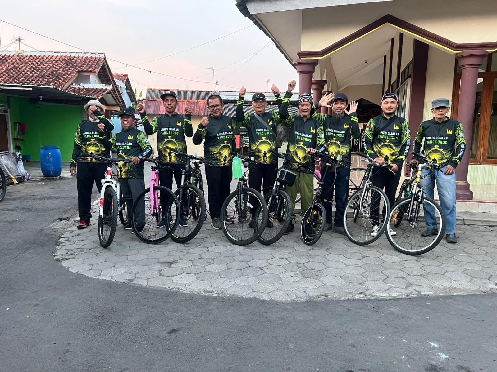
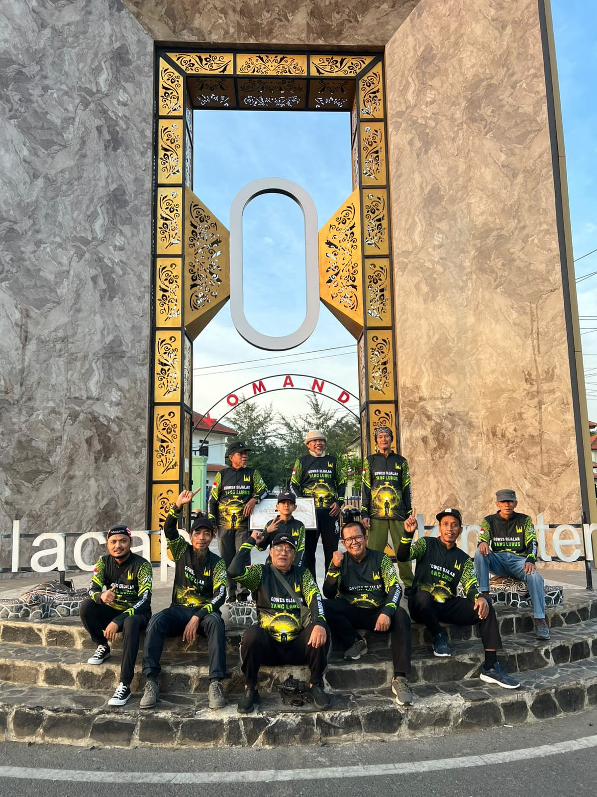
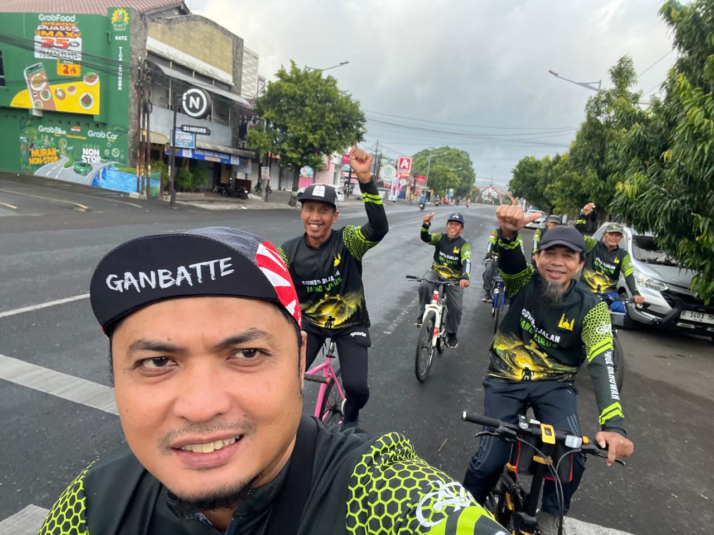
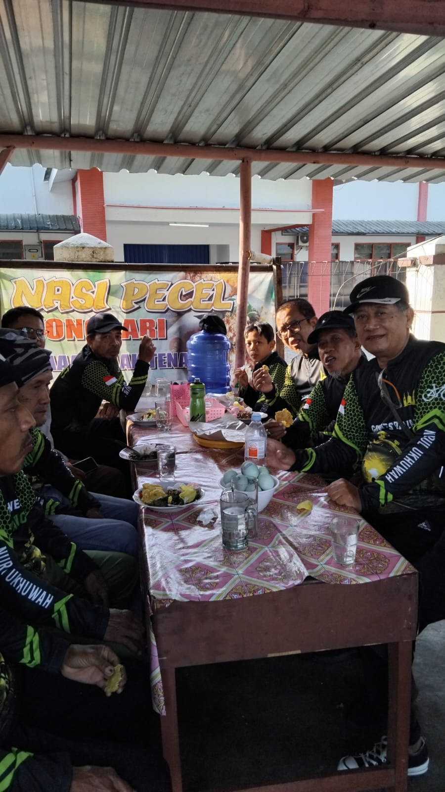
Setiap tahun Alhamdulillah menyembelih minimal 2 ekor sapi. Penyembelihan dilakukan sendiri oleh tim yang telah bersertifikat pelatihan Juleha — sesuai syariat, tidak menyakiti hewan, dan darah terkuras habis. Daging dikemas spesial untuk shohibul qurban dan dibagikan kepada warga sekitar.
💰 Program Tabungan Qurban — sudah diikuti 7 calon shohibul qurban! Semoga bertambah.
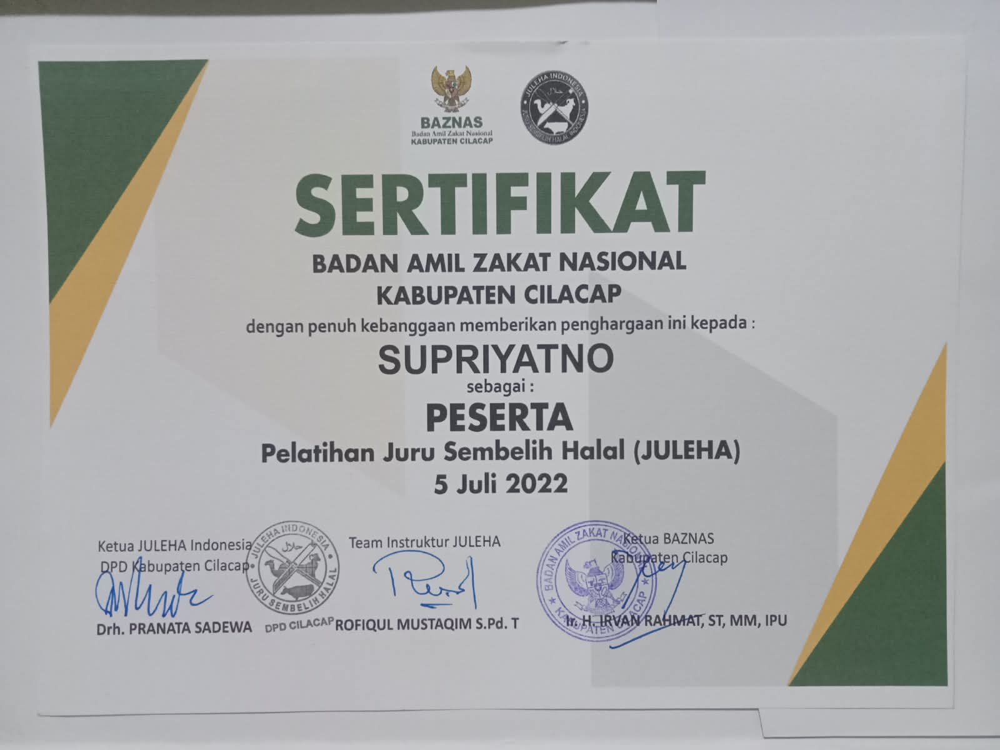
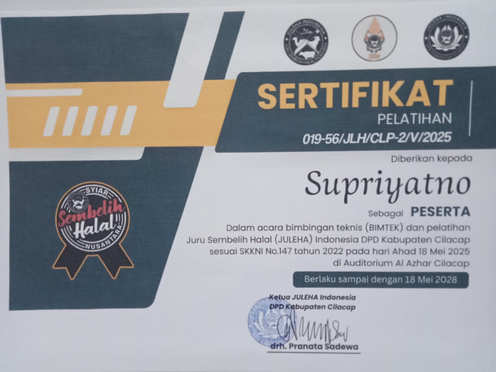
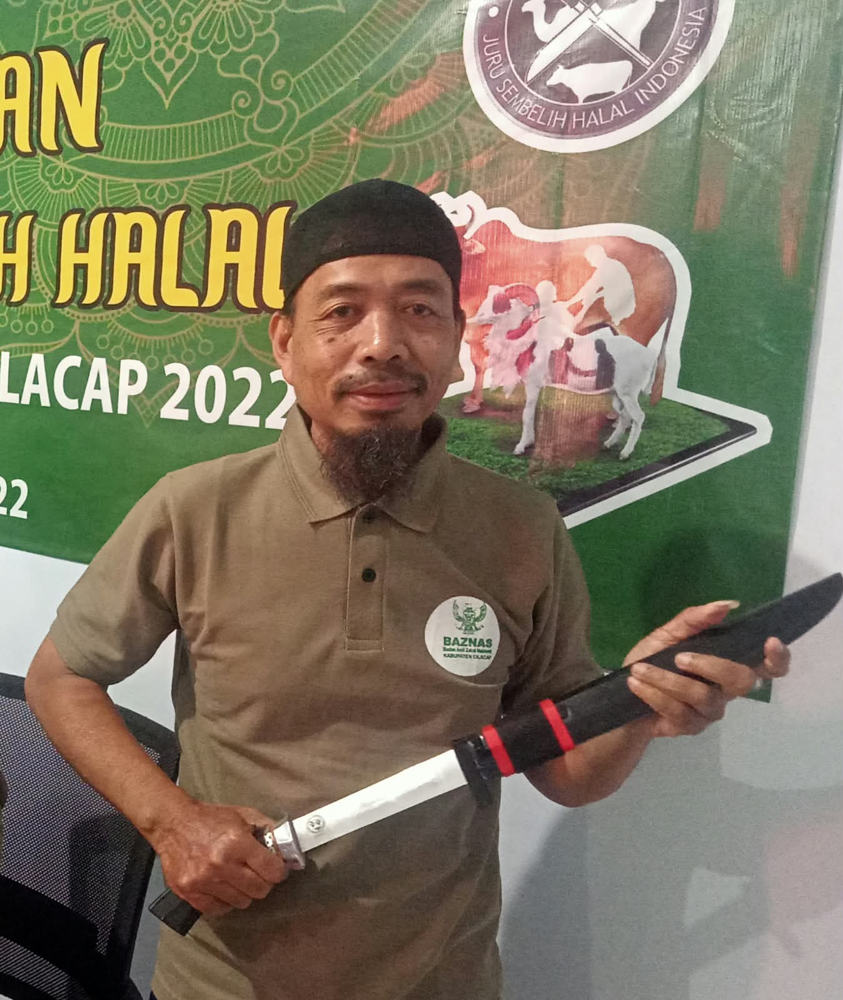
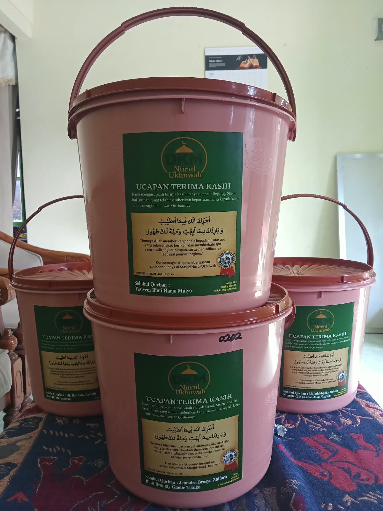
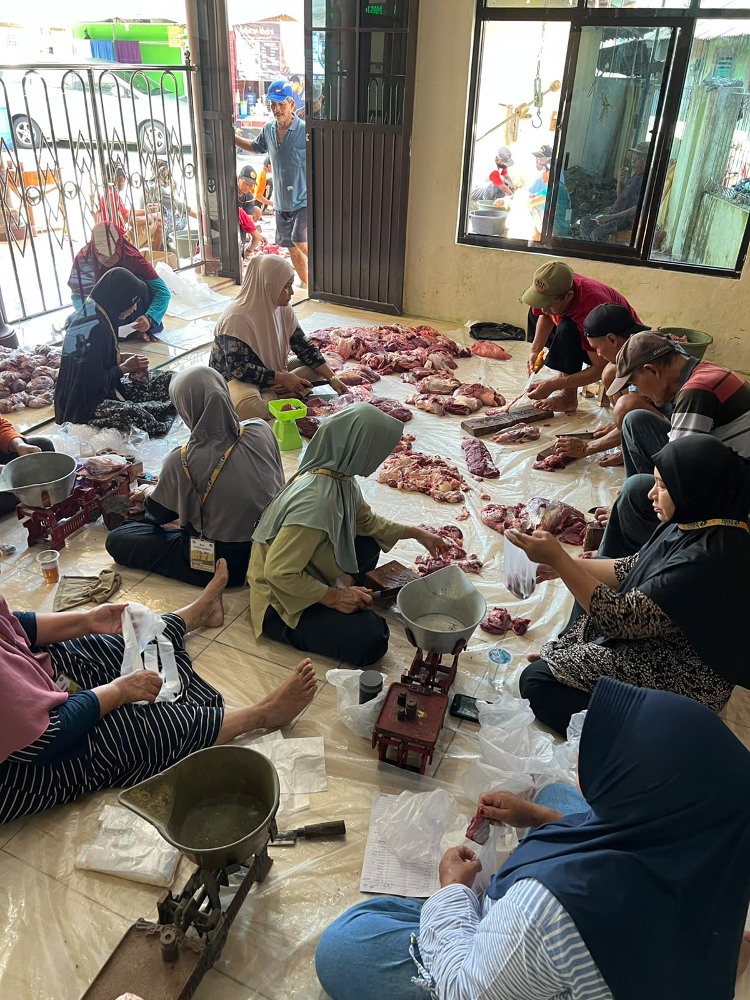
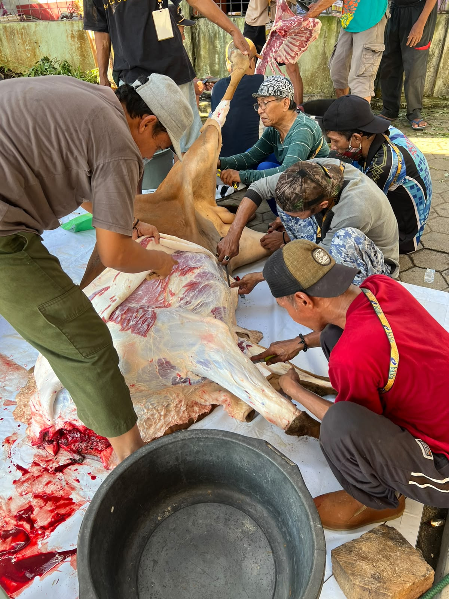
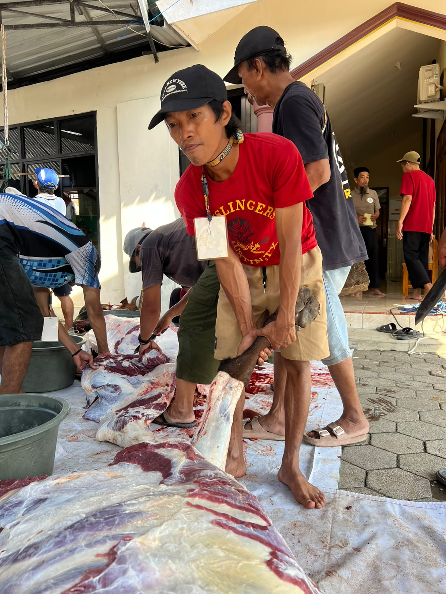
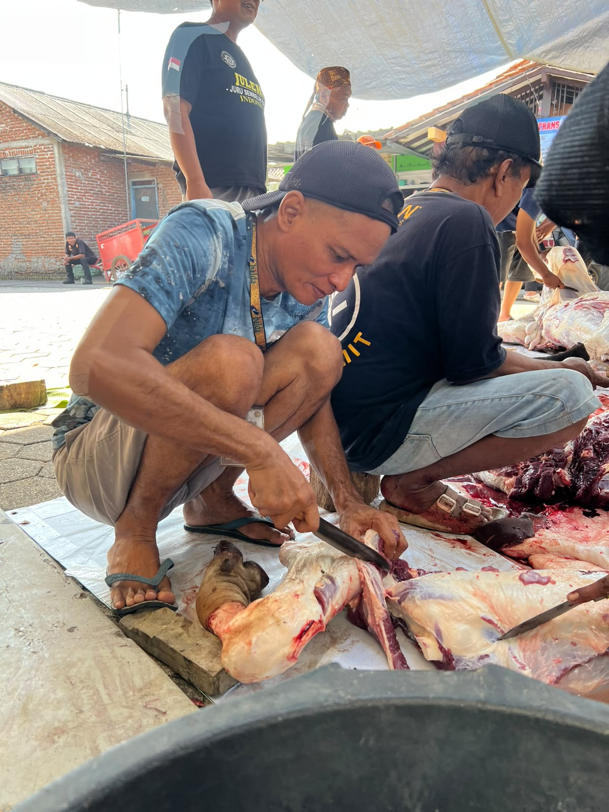
Penyaluran Parcel Idul Fitri — berbagi kebersamaan kepada warga sekitar.
Jl. Kutilang Barat
RT 01 RW XI, Kelurahan Donan
Kec. Cilacap Tengah, Kab. Cilacap
Jawa Tengah — 53222
Ketua — Sulistiyono
💬 WhatsApp: +62 813-2753-0681
Sekretaris — Aditia Nugroho
💬 WhatsApp: +62 813-1150-9584
Bendahara — Supriyatno
💬 WhatsApp: +62 838-7260-5334
✅ Operasional masjid
✅ Perawatan & perbaikan fasilitas
✅ Kegiatan kajian & pengajian
✅ Penghormatan untuk pengajar ilmu
✅ Kegiatan sosial & berbagi
✅ Ramadhan & Qurban
Bank Syariah Indonesia (BSI)
No. Rekening: 7205811871
a.n. Masjid Nurul Ukhuwah
Semoga Allah menerima setiap kebaikan dan melipatgandakan pahalanya. 🤲